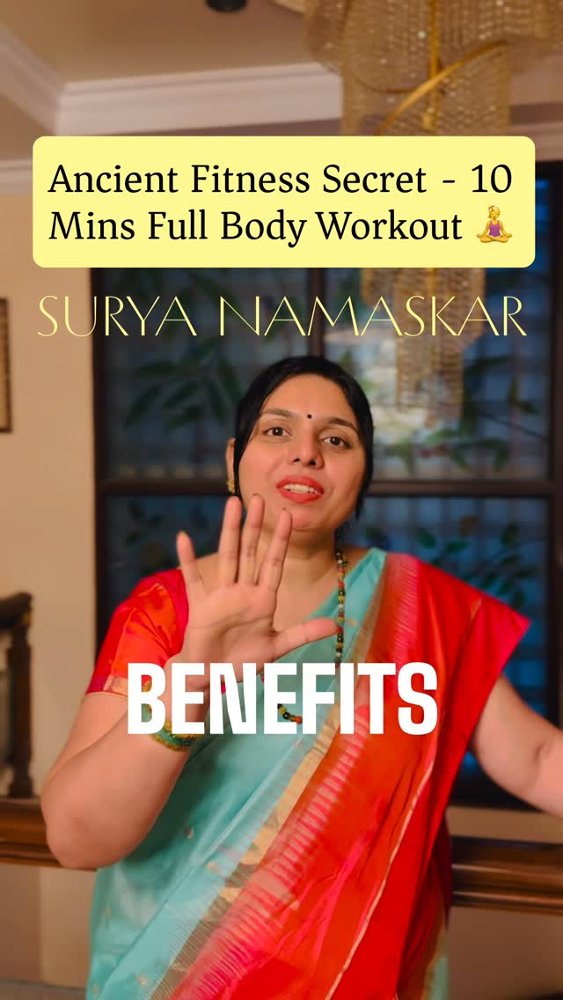
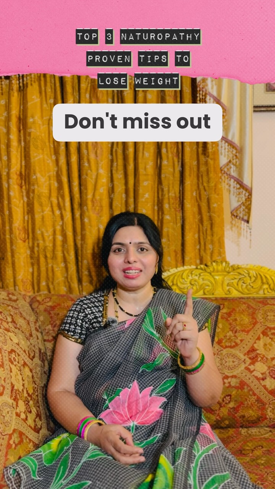
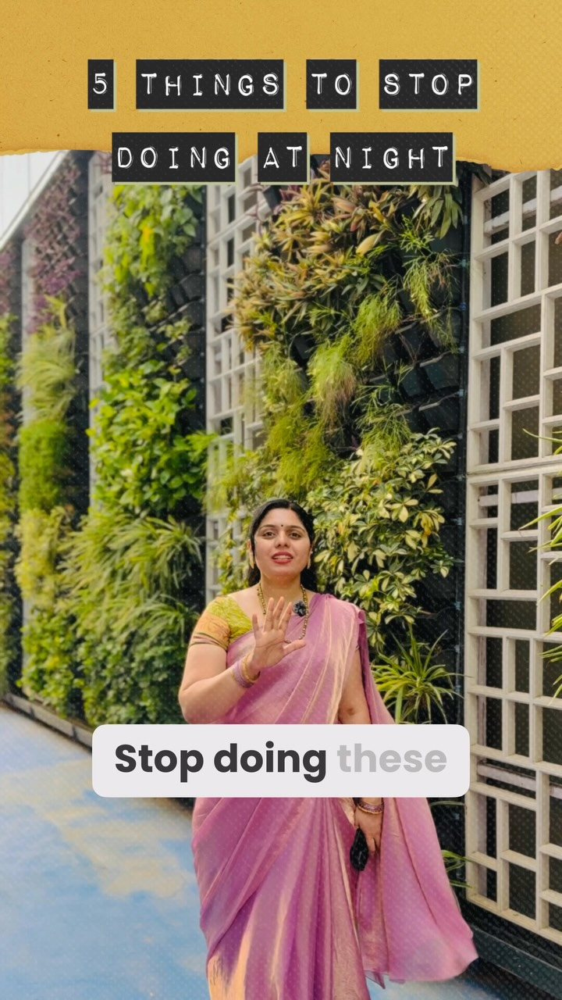
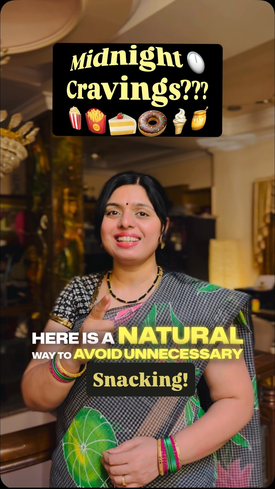

Understand the body
What is it doing, and why. The symptom gets read as a signal rather than treated as the problem.
Twenty-seven years spent on the harder definition — a body and mind that work well, held up by what you eat, how you move, and how you rest.
A house where somebody understands why the body is behaving the way it is — and knows the few small things that would settle it. No powders, no programme, no subscription. Just the knowledge, handed over.
Read her storyFor more than two decades her work has centred on one relationship: what food, movement, rest and mind do to the body's own processes. She draws on the traditional principles of Naturopathy and Yogic Sciences while staying close to current understanding of physiology and metabolism.
The approach starts with the individual, not the average. Rather than treating a symptom in isolation, a consultation works backwards through the lifestyle that produced it, and forwards into habits that can actually be kept.
Habits built before the lifestyle is corrected rarely survive the first fortnight. So the work runs in sequence, every time.
What is it doing, and why. The symptom gets read as a signal rather than treated as the problem.
Food, movement, rest, breath and light — given at the hours the body can actually use them.
Change the few things carrying the most weight, instead of overhauling everything at once.
Keep them past the novelty. A plan abandoned in March was never the right plan in January.
A metabolism that slowed down despite eating less and moving more.
A gut that reacts differently to the same food on different days.
Lying awake with a nervous system still running on the day's adrenaline.
Late eating that shows up in how the next morning feels.
An afternoon drop that coffee postpones rather than fixes.
Recovery that never quite finishes before the next one starts.
Not on this list? Ask anyway. The first consultation starts with your day, not with a diagnosis.
Lifestyle-based approaches built on the fundamentals — nutrition, hydration, movement, sleep, stress, breathing, time outdoors.
Food as part of metabolism, digestion, energy and recovery rather than a calorie count. What, how much, when, and how it is prepared.
Beyond posture: movement, breathing, relaxation and awareness folded into an ordinary day, without needing an hour you do not have.
Routine, activity, sleep quality, recovery and stress load — examined long before any of it becomes a diagnosis.
Complex physiology translated into language people can use, so a decision about dinner is informed rather than guessed.
Telling tradition, personal experience and marketing apart from what is actually supported — and saying so plainly.
Most of what she teaches is not a new food. It is the same food at a different hour.
Ten minutes carrying resistance, cardio, spinal decompression and breath work in one sequence — before the day has a chance to take them.
Moringa over matcha, amla over goji, makhana over quinoa, jamun over blueberries. Local, seasonal, and a fraction of the price.
Midday is when the body is best equipped to handle a full plate. Warm, freshly cooked, eaten without a screen in hand.
Light and early. The gap between the last bite and sleep does more work than the contents of the plate.
The nervous system needs a runway. Intensity this late keeps cortisol up when it should be falling.
Inhale four seconds, hold seven, exhale eight. Four cycles slow the heart rate and tell the body it is safe to let go.
General guidance, not a prescription. A consultation adjusts all of it to your day.
Moringa over matcha, amla over goji, and why the marketing is the only imported part.

Five metabolic benefits in one ten-minute sequence you can do on a balcony.

Jeera, sun salutations, dinner before seven, asleep by ten. That is the whole thing.
Stress, hydration and sleep change digestion as much as the food on the plate does.

Late eating, screens, cold water and hard training, quietly undoing your metabolism.

Your pancreas has clocked out. A two-minute naturopathy hack for the craving.
The 4-7-8 breath: four cycles to pull the nervous system out of fight-or-flight.
Ginger, tulsi, black pepper and coriander seed, twice a day, while you recover.
Superfoods have to be imported.
Moringa carries more iron and vitamin C than matcha, with no caffeine crash. Amla is among the richest natural sources of vitamin C on earth. The marketing budget is imported; the nutrition is not.
Bloating means you ate the wrong thing.
Stress, hydration, sleep and how fast you eat change digestion as much as the food does. Treating only the plate leaves most of the cause untouched.
Real results need two hours in a gym.
Six to twelve rounds of Surya Namaskar deliver resistance work, cardiovascular load, deep stretch and breath regulation in one sequence — repeatable on a balcony, every morning.
A snack at eleven is harmless.
The same food lands differently at 11 PM than at 7 PM. Digestion and insulin response are slowest at night, which is why late eating shows up in the next morning's glucose.
Every cough should be suppressed.
Support the recovery instead — warm, light meals, and a kashayam of ginger, tulsi, black pepper and coriander seed twice a day — rather than silencing the signal.
A first consultation goes through what you eat, when you eat it, how you sleep, how you move and what your days demand of you — then works out the smallest set of changes you can actually keep.
Naturopathy, nutrition and yoga guidance works alongside medical care, not instead of it. If you are under treatment for a diagnosed condition, are pregnant, or take prescribed medication, bring that to the consultation and keep your treating doctor in the loop. Nothing here replaces a qualified medical opinion.